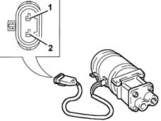
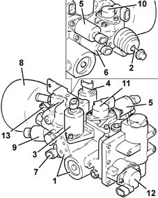
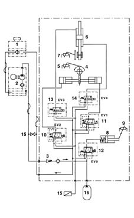
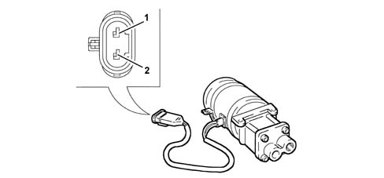
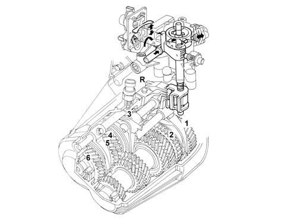
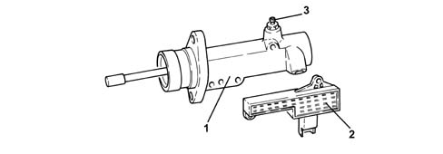
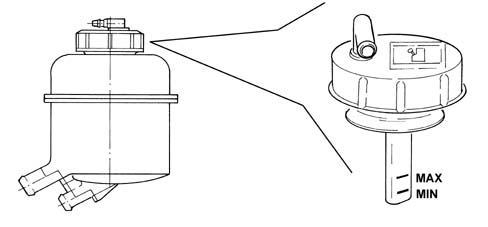

2127C hydraulic gear selection system
- Path
- Descriptions > 21 GEARBOX > 2127 ELECTRO-HYDRAULIC SELECTION. GEARBOX EXTERNAL. CONTROLS > 2127C hydraulic gear selection system
- Kind
- system description
- Applies to
- engines: 2.0 JTS, 3.2 V6, 2.0 JTS; all production periods
- Interactive page
- https://sloeber94.github.io/elrnDB-a156/en/#/3232903
Applies to: engines: 2.0 JTS, 2.0 JTS; all production periods; only with equipment: Smart gearbox
ELECTRIC PUMP
This gear pump is coupled to a commutator-type electric motor.
The electric pump is supported by a bracket with vibration-proof fittings.

1, Earth 2, Supply
Specifications
- Rated output: 0.7 l/min
- Service pressure: 40 bars
ELECTRO-HYDRAULIC UNIT
Its functions are:
- to operate the clutch control lever;
- operate the gear control shaft (selection and engagement manoeuvres;
- maintain a reserve of energy/hydraulic power for efficient actuator operation.
The hydraulic unit consists of:
- a cast body (1) fastened directly to the gearbox;
- a single-acting actuator (2) for operating the clutch lever;
- two proportional pressure valves EV1 (3) and EV2 (4) controlling the engagement actuator;
- two on-off solenoids EV3 (5) and EV4 (6)
- proportional flow solenoid EV0 (7) for controlling the clutch actuator;
- hydraulic gas accumulator (8);
- pressure sensor (9);
- sensor (10) for detecting clutch actuator position;
- sensor (11) for detecting engagement actuator position;
- sensor (12) for detecting selection actuator position;
- bleed valve (13).

Hydraulic diagram

1, Tank 2, Electric pump 3, Check valve 4, engagement/release actuator (with three mechanically-defined positions) 5, engagement actuator position potentiometer 6, selection actuator (with two fixed positions, the third selection position is defined by the inner gearbox springs) 7, selection actuator position potentiometer 8, clutch actuator (single-acting) 9, clutch actuator position potentiometer 10, proportional pressure solenoid EV2 controlling the engagement actuator 11, proportional pressure solenoid EV1 controlling engagement actuator 12, proportional flow solenoid EV0 controlling clutch actuator 13, on-off solenoid EV3 controlling selection actuator 14, on-off solenoid EV4 controlling selection actuator 15, pressure sensor 16, hydraulic gas accumulator 17, bleed valve
Applies to: engines: 3.2 V6; all production periods; only with equipment: Smart gearbox
COMPONENT DESCRIPTION
ELECTRIC PUMP
This gear pump is coupled to a commutator-type electric motor.
The electric pump is supported by a bracket with vibration-proof fittings.

1 Earth 2 Fuel system
IMPLEMENTATION HYDRAULIC UNIT
This contains all the proportional solenoid valves and the system hydraulic accumulator.
1 Hydraulic accumulator 2 Even speed engagement solenoid 3 Odd speed engagement solenoid 4 Clutch engagement/release solenoid 5. Brake solenoid (speed selection) 6. Oil pressure sensor
ELECTROHYDRAULIC SELECTION DEVICE
Replaces a conventional gearbox control and allows the gearbox linkages to be operated to change gear.

CLUTCH CONTROL ACTUATOR
Essentially the same as a slave cylinder on a conventional hydraulic clutch system.
Clutch position sensor (2) and system bleed valve (3) is fitted to clutch control atuator (1).

RESERVOIR
The reservoir containing the fluid necessary for the operation of the electro-hydraulic unit is located on the hydraulic pump mounting bracket.
The oil reservoir cover is equipped with:
- an upper breather fitting on the upper part,
- a rod used to check the level of fluid in the hydraulic system.
